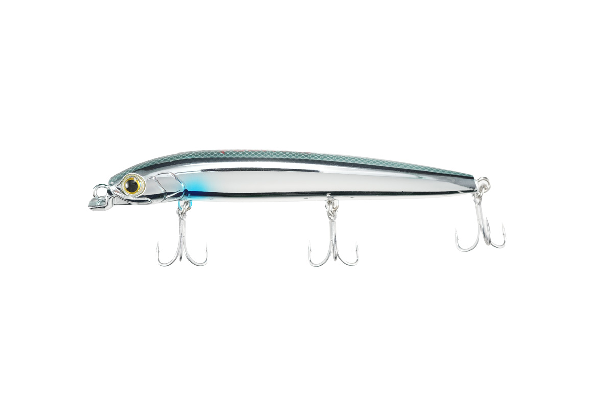
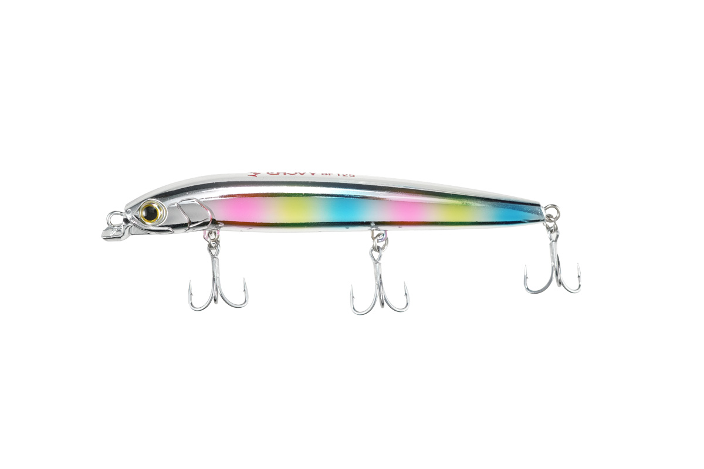
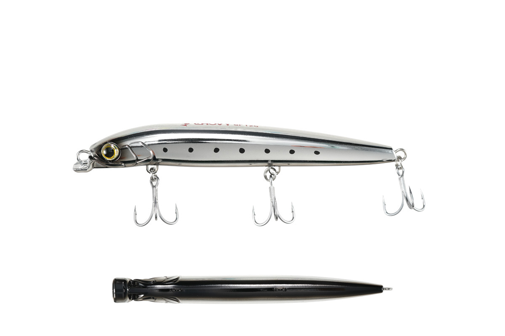
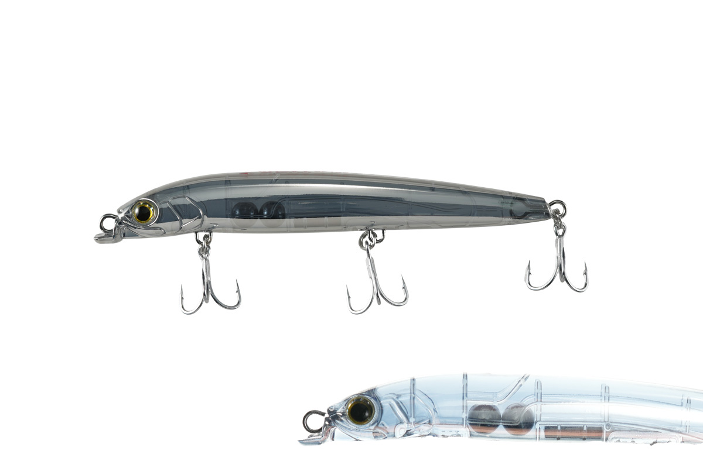

チョビーSF125 限定メタルカラー
（CHOVY SF125）
チョビーSF125 限定メタルカラー（CHOVY SF125）はMaria（マリア）のシャローランナーです。
ロックショアの青物ゲームをリードするマリアが、磯のヒラスズキやシーバス（磯マル）に焦点を当てて開発した喰わせ特化型シャローランナー「チョビーSF125」。その公式オンラインストア限定カラーが、Maria公式Instagramフォロワー（ヒラスズキアングラー）の声から誕生した“メタルカラー”です。サラシの中で乱反射する「煌めき」と、馴染みながら存在感を残す「透け感」を両立させた4色がそろいます。

画像出典:マリア公式オンラインストア
スペック
- メーカー
- Maria（マリア）
- タイプ
- シャローランナー（スローフローティング）
- 全長
- 125mm
- 自重
- 20g
- フック
- トリプル太軸 #6
- リング
- #3
- カラー
- メタルカラー全4色（蒸着メッキ）
- ターゲット
- ヒラスズキ・シーバス
- 価格
- 2,728円（税込）
- 販売
- 2026年10月19日より公式オンラインストアで先着販売（数量限定）
▼今すぐチェック

チョビーSF125 限定メタルカラーの特徴
サラシに馴染む「透け感」と、乱反射する「煌めき」を両立した限定カラー
-
サラシ漂わせ系シャローランナー
水面直下の捕食ゾーンを、艶めかしいタイトな純ロールアクションで見せる。水平寄りのスイム姿勢とサスペンドに近い比重で、サラシの中をユラユラと漂うカタクチイワシを再現している。
-
サスペンドに近いスローフローティング
海水では50cm浮上するのに約5〜10秒かかる、超デッドスローのフローティング。トレースを止めて波風でドリフトさせても、サラシの中でレンジをキープしやすい。
-
蒸着メッキの限定メタルカラー
限定カラーはすべて蒸着メッキ仕様。強烈なフラッシングで遠くの魚に気づかせつつ、ハーフメッキでは透け感も残して、スレた魚にも口を使わせる。
チョビーSF125 限定メタルカラーの使い方
基本はサラシの中に入れて、スローリトリーブで漂わせる。巻くのを止めて波や風でドリフトさせても、サスペンドに近い比重で水面直下のレンジを保てるので、サラシに長くルアーを留められる。
無風・ベタ凪で反応がない時は、ショートジャークで横っ飛びのダートを入れて食わせのスイッチを入れましょう。
チョビーSF125 限定メタルカラーの得意な状況
磯のサラシの中にヒラスズキが付いている状況が最大の出番。
日中の晴れた時間帯は、メッキの強いフラッシングで遠くの魚に気づかせやすく、メタルカラーの「煌めき」が活きる場面で選びたい1本です。
ワンポイント
公式サイトによると、純正フックを細軸にすると軽くなってF（フローティング）に、一回り大きくすると重くなってSS（スローシンキング）に調整できます。フックを小さくしすぎるとフッキングが悪くなるので注意しましょう。
汽水域（河口）や淡水域では比重が変わり、スローシンキングになることがあります。メタルカラーは数量限定のため、在庫がなくなり次第終了です。
チョビーSF125の使い分け
| 仕様 | 重さ・タイプ | ポイント |
|---|---|---|
| 純正フック | 20g・スローフローティング | サラシに漂わせる基本の状態 |
| 細軸フックに交換 | 軽くなる・フローティング寄り | 浅い釣り場・ウェーディング・レンジを浅くしたい時 |
| 一回り大きいフックに交換 | 重くなる・スローシンキング | ランカー狙い・少し下のレンジを引きたい時 |
※フックアレンジの内容はマリア公式サイトの説明をもとにしています。アクションの質はほとんど変わらないとされています。
メタルカラー4色
オンラインストア限定のメタルカラーは全4色。すべて蒸着メッキ仕様です。

メタルベイト小魚の煌めきを凝縮した王道メタリック。日中のヒラスズキゲームのあらゆる状況に対応できる万能色。

メタルキャンディ蒸着メッキにピンク・ブルー・イエローを散りばめたキャンディパターン。クリアな潮や高活性時に。

メタルブラック漆黒のシルエットに蒸着メッキの艶。濃いサラシやタフコンディションで口を使わせる。

ハーフメタル透けつつフラッシングも欲しい時の蒸着ハーフメッキ。スレた魚に効くハイブリッド仕様。
画像出典:マリア公式オンラインストア
チョビーSF125 限定メタルカラーに似ているルアー
-
 アイザー125F
ブルーブルー
詳細はこちら＞
アイザー125F
ブルーブルー
詳細はこちら＞
「先発」として最初に投げるシャローランナー。サラシの周りを広く探りたい時に。
-
 カゲロウ124F
メガバス
詳細はこちら＞
カゲロウ124F
メガバス
詳細はこちら＞
名作シャローランナー。重心移動の飛距離で、沖のサラシまで届かせたい時に。
-
 ポップクイーンS105
マリア
詳細はこちら＞
ポップクイーンS105
マリア
詳細はこちら＞
同じマリアのヒラスズキ向けシンキングポッパー。荒れたサラシで水面を割って誘いたい時に。